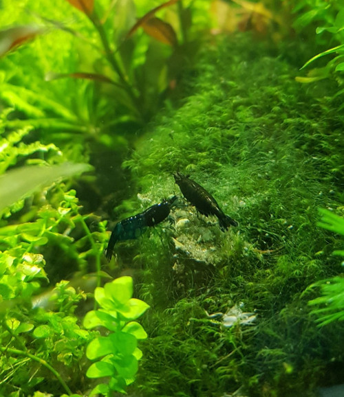
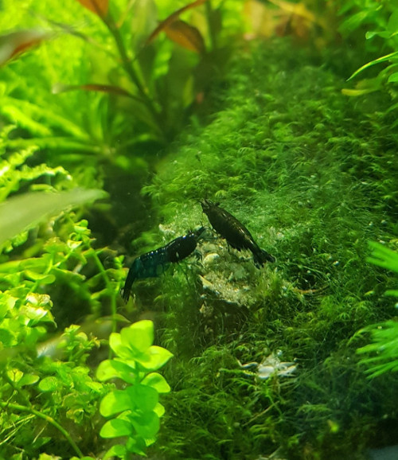

Moja wlasna hodowla krewetek karlowatych z gatunku Neocaridina Davidi,
variant kolorystyczny Blue Velvet.
W akwarium o pojemnosci 30l posiadam obecnie okolo 50 sztuk.
Krewetki te zyja okolo 4-5 miesiecy i dorastaja do 2.5cm dlugosci (samice) oraz 2cm (samce).
 
